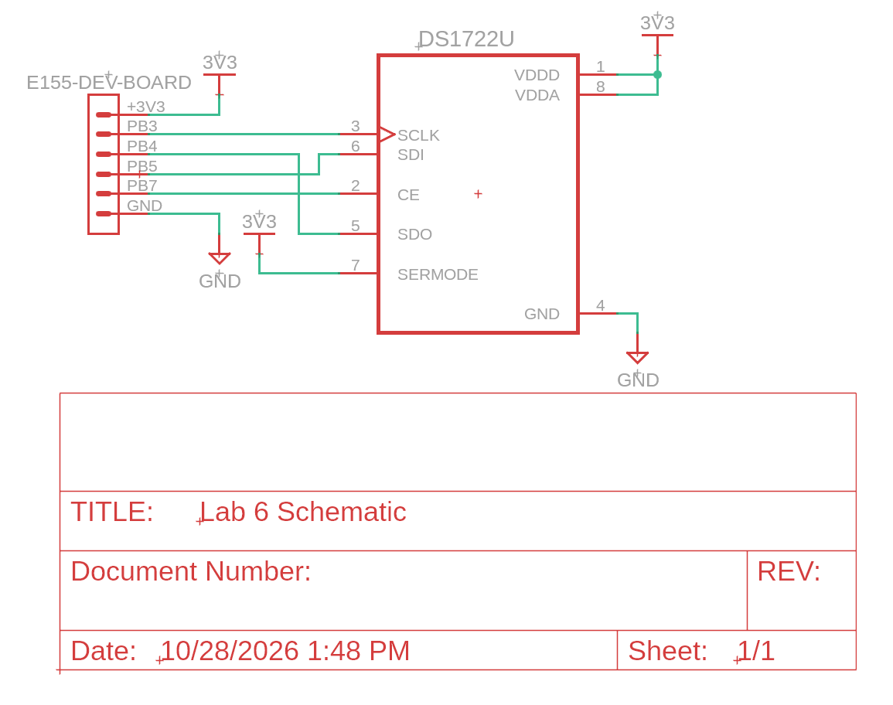

Lab 6: The Internet of Things and Serial Peripheral Interface
Introduction
In this lab, a STM32L432KC MCU was used to sense temperature from a DS1722 temperature sensor over SPI. Then, the MCU communicated with a ESP8266 module of UART, which sent the temperature to a HTML webpage which was broadcasted over a WIFI network. Additionally, when a device connected to the ESP’s WIFI network and accessed the webpage, an LED was able to be activated and deactivated, and the resolution of the temperature sensor was able to be changed.
Design and Testing Methodology
First, the SPI communication system was designed. This was done by using CMSIS headers to enable the required pins. Following this, a base communication block was designed. This block would wait for any proceeding messages to end, send a 1 byte message, then record the resulting message.
char spiSendReceive(char send){
while (!(SPI1->SR & SPI_SR_TXE));
*((volatile char *) (&SPI1->DR)) = send;
while (!(SPI1->SR & SPI_SR_RXNE));
return *((volatile char *) (&SPI1->DR));
}After that is completed, the block was designed to be ran twice to actually create the fundamental messages that are used in an SPI connection.
void spiWrite(char address, char write){
digitalWrite(CE_PIN, 1);
spiSendReceive(address);
spiSendReceive(write);
while (SPI1->SR & SPI_SR_BSY);
digitalWrite(CE_PIN, 0);
}
char spiRead(char address){
digitalWrite(CE_PIN, 1);
spiSendReceive(address);
char val = spiSendReceive(0x00); //empty as this is just to receive data.
while (SPI1->SR & SPI_SR_BSY);
digitalWrite(CE_PIN, 0);
return val;
}To test this, a basic SPI communication block was ran, and each of the four signals used in an SPI connection (CE/EN, SCK/SCLK, MOSI/SDI, MISO/SDO) were measured on an oscilloscope to ensure that the communication was ran properly.

Each of these communication blocks were used in the main loop. This loop would wait for a user input to be sent into the web page, which would get passed over UART from the ESP to the MCU. Then, the MCU would read the input, and based on it either change the LED state or send the new temperature resolution to the DS1722. Following this, the current temperature would be read, and it and the current LED state would be written to HTML code. This HTML code would then be sent back to the ESP to be broadcasted on the website.
while(1) {
/* Wait for ESP8266 to send a request.
Requests take the form of '/REQ:<tag>\n', with TAG begin <= 10 characters.
Therefore the request[] array must be able to contain 18 characters.
*/
// Receive web request from the ESP
char request[BUFF_LEN] = " "; // initialize to known value
int charIndex = 0;
// Keep going until you get end of line character
while(inString(request, "\n") == -1) {
// Wait for a complete request to be transmitted before processing
while(!(USART->ISR & USART_ISR_RXNE));
request[charIndex++] = readChar(USART);
}
if(inString(request, "led") == 1) {
led_status = updateLEDStatus(request);
}else if(inString(request, "r") == 1){
updateTempRes(request);
}
char tempStatusStr[50];
readTemp(tempStatusStr);
// Update string with current LED state
char ledStatusStr[20];
if (led_status == 1)
sprintf(ledStatusStr,"LED is on!");
else if (led_status == 0)
sprintf(ledStatusStr,"LED is off!");
// finally, transmit the webpage over UART
sendString(USART, webpageStart); // webpage header code
sendString(USART, ledStr); // button for controlling LED
sendString(USART, "<h2>LED Status</h2>");
sendString(USART, "<p>");
sendString(USART, ledStatusStr);
sendString(USART, "</p>");
sendString(USART, "<h2>Temperature Status</h2>");
sendString(USART, "<p>");
sendString(USART, tempStatusStr);
sendString(USART, "</p>");
sendString(USART, tempResStr); // buttons for controlling temperature resolution
sendString(USART, webpageEnd);The electronics were designed in a very basic manner which is depicted in the schematic. One thing to note is that when I attempted to drive both the LED pin and the SPI CE pin from the same line (LED on PA6 and SPI CE on PB6) the voltage coming out of both pins was halved. This was not supposed to happen, and was rectified by moving SPI CE to a different line (PB7).
Technical Documentation
The source code for the project can be found in the associated Github repository.
Schematic

Results and Discussion
This design was able to achieve all tasks. Despite some electrical issues, the code was able to accurately read temperature at different resolutions form a DS1722 temperature sensor and change the state of an LED. Additionally, my HTML implementation created a simple page that condensed multiple buttons into a single dropdown. Lastly, my SPI communication block ran properly and appeared perfectly on an oscilloscope.
Conclusion
The MCU was properly programmed and the circuit was properly assembled, resulting in a design that was able to read the current temperature and change the status of an LED
I spent a total of 10 hours working on this lab.
AI Prototype Summary
I used the Claude Pro set to Opus 5.5 with medium effort for these responses.
Regarding the HTML, LLM performed quite well, generating a pretty (if Claude-y looking) interface that would function very well in an actual system. However, as the only thing I was supposed to send the LLM was the specific prompt given, it did not make code that would be useable in the project. This was due to a variety of reasons, including that the HTML signal lengths being too long, assuming that the temperature sensor had a built API, and the use of unsupported techniques. Simply, the LLM assumed a far more built out and “professional” project, and built a html page that would function well withing that.
The C code was written in a decently clear manner, but it did some actions, like grouping multiple register edits into a single block that made the code hard to understand. It did some other tasks, like integrating the temperature calculations into the SPI function, that I did not do but did not affect the overall code function. When integrated into the project, the project built and ran properly.
Overall, LLM worked quite well when applied to both frontend HTML and low-level embedded C. However, the LLM faltered when used to write code without sufficient context of the surrounding project. With that in mind, in the future I would grant the LLM access to my overall code base so it could write code that would be better able to be integrated into my project. Between frontend and low-level code, I would generally apply the LLM to the frontend as I find that code requires less thought and is more rote formatting which it works well for.
<!DOCTYPE html>
<html lang="en">
<head>
<meta charset="UTF-8">
<meta name="viewport" content="width=device-width, initial-scale=1">
<title>Temperature sensor</title>
<style>
:root {
--bg: #f5f4ef; --card: #ffffff; --text: #1f1e1d; --muted: #6b6a66;
--border: rgba(0,0,0,0.1); --accent: #2f6fd6; --accent-bg: #e6f1fb;
--ok: #3b6d11; --ok-bg: #eaf3de; --err: #a32d2d; --err-bg: #fcebeb;
--line: #d85a30;
}
@media (prefers-color-scheme: dark) {
:root {
--bg: #1a1a19; --card: #262624; --text: #f1efe8; --muted: #a3a29c;
--border: rgba(255,255,255,0.12); --accent: #5b9bf0; --accent-bg: #0c2c53;
--ok: #97c459; --ok-bg: #1f3308; --err: #f09595; --err-bg: #4a1414;
}
}
* { box-sizing: border-box; }
body {
margin: 0; background: var(--bg); color: var(--text);
font-family: system-ui, -apple-system, "Segoe UI", Roboto, sans-serif;
}
main { max-width: 720px; margin: 0 auto; padding: 2rem 1rem; }
h1 { font-size: 22px; font-weight: 500; margin: 0 0 1.5rem; }
.grid { display: grid; gap: 12px; grid-template-columns: repeat(auto-fit, minmax(260px, 1fr)); }
.card { background: var(--card); border: 1px solid var(--border); border-radius: 12px; padding: 1.25rem; }
.wide { grid-column: 1 / -1; }
.label { font-size: 13px; color: var(--muted); margin-bottom: 12px; }
.row { display: flex; justify-content: space-between; align-items: center; gap: 8px; flex-wrap: wrap; }
.pill { font-size: 12px; padding: 3px 10px; border-radius: 8px; }
.pill.ok { color: var(--ok); background: var(--ok-bg); }
.pill.err { color: var(--err); background: var(--err-bg); }
.reading { display: flex; align-items: baseline; gap: 6px; margin: 12px 0 4px; }
#temp { font-size: 64px; font-weight: 500; line-height: 1; font-variant-numeric: tabular-nums; }
#unitLabel { font-size: 24px; color: var(--muted); }
.meta { font-size: 13px; color: var(--muted); }
svg { width: 100%; height: 60px; margin-top: 12px; }
.seg { display: inline-flex; border: 1px solid var(--border); border-radius: 8px; overflow: hidden; }
.seg button {
border: none; background: transparent; color: var(--text); padding: 8px 14px;
font-size: 14px; cursor: pointer; font-family: inherit;
}
.seg button.on { background: var(--accent-bg); color: var(--accent); }
.switch {
width: 48px; height: 26px; border-radius: 13px; border: 1px solid var(--border);
background: var(--bg); position: relative; cursor: pointer; padding: 0;
}
.switch span {
position: absolute; top: 3px; left: 3px; width: 18px; height: 18px; border-radius: 50%;
background: var(--muted); transition: left 0.15s;
}
.switch.on { background: var(--accent); }
.switch.on span { left: 25px; background: #fff; }
#ledState { font-size: 18px; font-weight: 500; }
button:focus-visible { outline: 2px solid var(--accent); outline-offset: 2px; }
</style>
</head>
<body>
<main>
<h1>Temperature sensor</h1>
<div class="grid">
<section class="card wide">
<div class="row">
<span class="meta">Current temperature</span>
<span id="status" class="pill ok">Connecting…</span>
</div>
<div class="reading">
<span id="temp">--</span><span id="unitLabel">°C</span>
</div>
<div class="row meta">
<span id="minmax">Min -- · Max --</span>
<span id="updated">Waiting for data</span>
</div>
<svg viewBox="0 0 600 60" preserveAspectRatio="none" aria-hidden="true">
<polyline id="spark" fill="none" stroke="var(--line)" stroke-width="2" points=""/>
</svg>
</section>
<section class="card">
<div class="label">LED</div>
<div class="row">
<span id="ledState">Off</span>
<button id="ledSwitch" class="switch" role="switch" aria-checked="false" aria-label="Toggle LED"><span></span></button>
</div>
</section>
<section class="card">
<div class="label">Display</div>
<div class="row">
<div class="seg" id="precision" role="group" aria-label="Decimal places">
<button data-p="0">0</button>
<button data-p="1" class="on">0.0</button>
<button data-p="2">0.00</button>
</div>
<div class="seg" id="units" role="group" aria-label="Units">
<button data-u="C" class="on">°C</button>
<button data-u="F">°F</button>
</div>
</div>
</section>
</div>
</main>
<script>
// Endpoints your device should serve. Adjust to match your firmware.
const API = {
temperature: "/api/temperature", // GET -> { "celsius": 22.4 }
led: "/api/led", // GET -> { "on": true } POST { "on": true }
precision: "/api/precision" // POST { "decimals": 1 } (optional)
};
const POLL_MS = 2000;
const HISTORY = 60;
const state = {
decimals: +(localStorage.getItem("decimals") ?? 1),
unit: localStorage.getItem("unit") ?? "C",
led: false,
history: [],
demo: false
};
const $ = id => document.getElementById(id);
const convert = c => state.unit === "F" ? c * 9 / 5 + 32 : c;
const fmt = c => convert(c).toFixed(state.decimals);
function setStatus(ok, text) {
$("status").className = "pill " + (ok ? "ok" : "err");
$("status").textContent = text;
}
function render() {
$("unitLabel").textContent = "°" + state.unit;
const h = state.history;
if (!h.length) return;
$("temp").textContent = fmt(h[h.length - 1]);
$("minmax").textContent = `Min ${fmt(Math.min(...h))} · Max ${fmt(Math.max(...h))}`;
const lo = Math.min(...h) - 0.2, hi = Math.max(...h) + 0.2;
$("spark").setAttribute("points", h.map((v, i) =>
`${(i * 600 / Math.max(h.length - 1, 1)).toFixed(1)},${(55 - (v - lo) / (hi - lo) * 50).toFixed(1)}`
).join(" "));
}
let demoValue = 22.4;
async function readTemperature() {
try {
const res = await fetch(API.temperature, { cache: "no-store" });
if (!res.ok) throw new Error(res.status);
const data = await res.json();
state.demo = false;
setStatus(true, "Connected");
return data.celsius;
} catch {
state.demo = true;
setStatus(false, "Demo data");
demoValue += (Math.random() - 0.5) * 0.3;
return demoValue;
}
}
async function poll() {
const c = await readTemperature();
if (typeof c === "number" && isFinite(c)) {
state.history.push(c);
if (state.history.length > HISTORY) state.history.shift();
$("updated").textContent = "Updated " + new Date().toLocaleTimeString();
render();
}
}
function showLed() {
$("ledSwitch").classList.toggle("on", state.led);
$("ledSwitch").setAttribute("aria-checked", state.led);
$("ledState").textContent = state.led ? "On" : "Off";
}
$("ledSwitch").addEventListener("click", async () => {
const previous = state.led;
state.led = !state.led;
showLed();
if (state.demo) return;
try {
const res = await fetch(API.led, {
method: "POST",
headers: { "Content-Type": "application/json" },
body: JSON.stringify({ on: state.led })
});
if (!res.ok) throw new Error(res.status);
} catch {
state.led = previous; // roll back if the device didn't accept it
showLed();
setStatus(false, "LED update failed");
}
});
function wireSegment(id, attr, apply) {
const buttons = document.querySelectorAll(`#${id} button`);
buttons.forEach(b => {
b.addEventListener("click", () => {
buttons.forEach(x => x.classList.toggle("on", x === b));
apply(b.dataset[attr]);
render();
});
});
}
wireSegment("precision", "p", p => {
state.decimals = +p;
localStorage.setItem("decimals", p);
if (!state.demo) {
fetch(API.precision, {
method: "POST",
headers: { "Content-Type": "application/json" },
body: JSON.stringify({ decimals: +p })
}).catch(() => {});
}
});
wireSegment("units", "u", u => {
state.unit = u;
localStorage.setItem("unit", u);
});
// Restore saved preferences
document.querySelectorAll("#precision button").forEach(b => b.classList.toggle("on", +b.dataset.p === state.decimals));
document.querySelectorAll("#units button").forEach(b => b.classList.toggle("on", b.dataset.u === state.unit));
// Initial LED state from device
fetch(API.led, { cache: "no-store" })
.then(r => r.json()).then(d => { state.led = !!d.on; showLed(); })
.catch(() => {});
poll();
setInterval(poll, POLL_MS);
</script>
</body>
</html> #include "STM32L432KC_SPI.h"
static inline void ds1722_short_delay(void)
{
/* CE setup/hold is ~400 ns; this is comfortably longer at 80 MHz */
for (volatile int i = 0; i < 40; i++) { __NOP(); }
}
static inline void ce_high(void)
{
DS1722_CE_PORT->BSRR = (1U << DS1722_CE_PIN);
ds1722_short_delay();
}
static inline void ce_low(void)
{
/* Make sure the last frame has fully left the shift register */
while (SPI1->SR & SPI_SR_BSY) { }
ds1722_short_delay();
DS1722_CE_PORT->BRR = (1U << DS1722_CE_PIN);
ds1722_short_delay();
}
/* Full-duplex 8-bit transfer */
static uint8_t spi1_transfer(uint8_t tx)
{
while (!(SPI1->SR & SPI_SR_TXE)) { }
/* 8-bit access to DR is required on the L4 to avoid data packing */
*(volatile uint8_t *)&SPI1->DR = tx;
while (!(SPI1->SR & SPI_SR_RXNE)) { }
return *(volatile uint8_t *)&SPI1->DR;
}
void spi1_init(void)
{
/* Clocks */
RCC->AHB2ENR |= RCC_AHB2ENR_GPIOAEN | RCC_AHB2ENR_GPIOBEN;
RCC->APB2ENR |= RCC_APB2ENR_SPI1EN;
/* PB3, PB4, PB5 -> alternate function 5 (SPI1) */
GPIOB->MODER &= ~(GPIO_MODER_MODE3 | GPIO_MODER_MODE4 | GPIO_MODER_MODE5);
GPIOB->MODER |= (2U << GPIO_MODER_MODE3_Pos) |
(2U << GPIO_MODER_MODE4_Pos) |
(2U << GPIO_MODER_MODE5_Pos);
GPIOB->AFR[0] &= ~(GPIO_AFRL_AFSEL3 | GPIO_AFRL_AFSEL4 | GPIO_AFRL_AFSEL5);
GPIOB->AFR[0] |= (5U << GPIO_AFRL_AFSEL3_Pos) |
(5U << GPIO_AFRL_AFSEL4_Pos) |
(5U << GPIO_AFRL_AFSEL5_Pos);
GPIOB->OSPEEDR |= GPIO_OSPEEDR_OSPEED3 | GPIO_OSPEEDR_OSPEED5;
/* CE pin -> push-pull output, idle LOW (DS1722 CE is active high) */
DS1722_CE_PORT->MODER &= ~(3U << (DS1722_CE_PIN * 2U));
DS1722_CE_PORT->MODER |= (1U << (DS1722_CE_PIN * 2U));
DS1722_CE_PORT->BRR = (1U << DS1722_CE_PIN);
/* SPI1: master, software NSS, CPOL=0, CPHA=1 (SPI mode 1),
* MSB first, baud = fPCLK/32 (2.5 MHz at 80 MHz; DS1722 max is 5 MHz) */
SPI1->CR1 = 0;
SPI1->CR1 = SPI_CR1_MSTR | SPI_CR1_SSM | SPI_CR1_SSI |
SPI_CR1_CPHA |
(4U << SPI_CR1_BR_Pos);
/* 8-bit frames, RXNE fires at 8 bits (FRXTH) */
SPI1->CR2 = (7U << SPI_CR2_DS_Pos) | SPI_CR2_FRXTH;
SPI1->CR1 |= SPI_CR1_SPE;
}
void ds1722_write_config(uint8_t cfg)
{
ce_high();
spi1_transfer(DS1722_CFG_WRITE);
spi1_transfer(cfg);
ce_low();
}
void ds1722_init(void)
{
ds1722_write_config(DS1722_CFG_12BIT_CONT);
}
float ds1722_read_temperature(void)
{
uint8_t lsb, msb;
ce_high();
spi1_transfer(DS1722_TEMP_LSB); /* send address, ignore returned byte */
lsb = spi1_transfer(0x00); /* reg 0x01 */
msb = spi1_transfer(0x00); /* reg 0x02 (auto-increment) */
ce_low();
/* 16-bit two's complement value in units of 1/256 °C */
int16_t raw = (int16_t)(((uint16_t)msb << 8) | lsb);
return (float)raw / 256.0f;
}